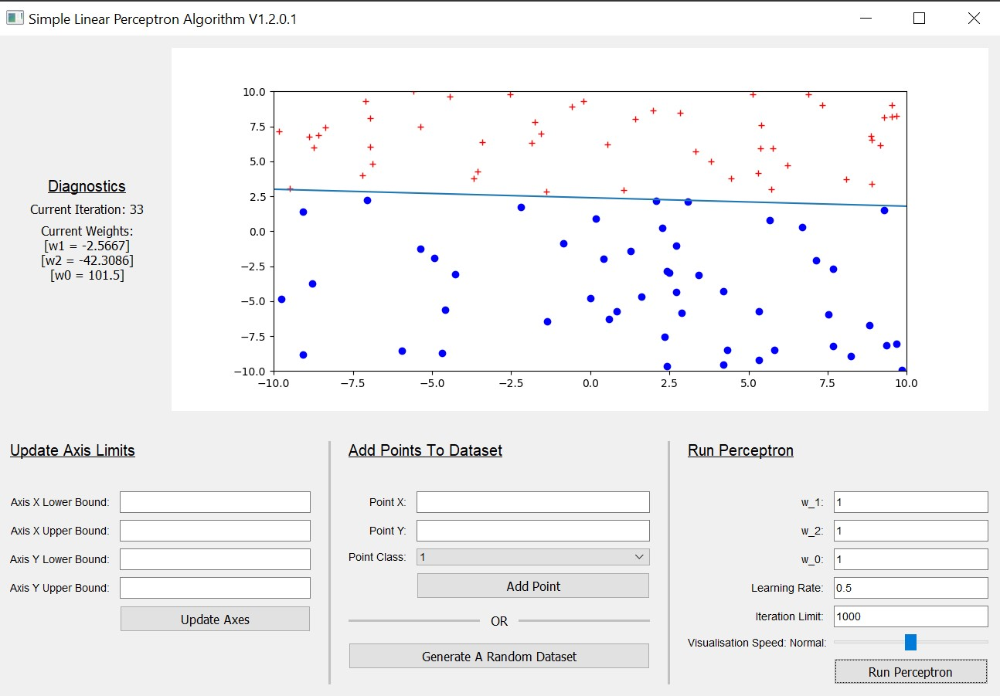
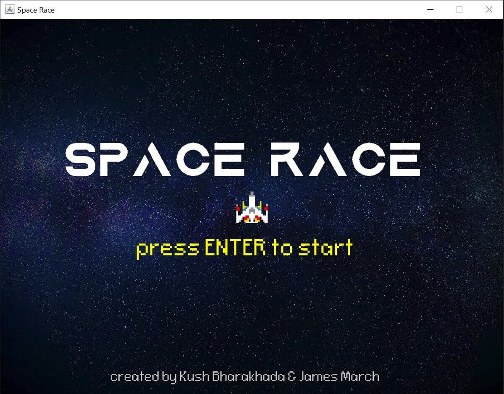
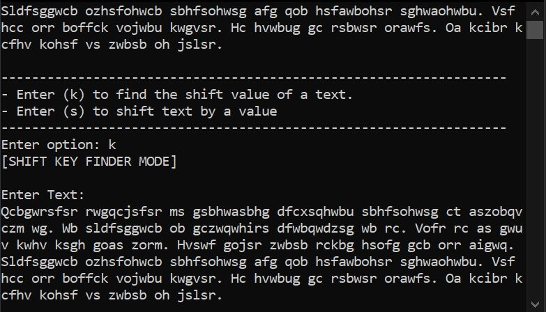
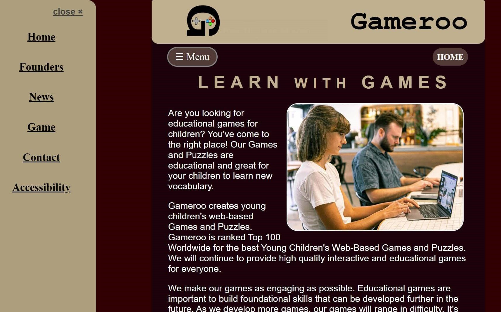

HTML
CSS
JavaScript
Tailwind
Public
Current Personal Projects Portfolio
21st January 2023
Personal portfolio to keep all my projects together and to view them quickly and easily. The idea of this project was to understand and to get familar with Tailwind (utility-first CSS framework), as previously I had only used vanilla HTML, CSS and Javascript.

Python
NumPy
PyQt
Public
Simple Linear Perceptron with GUI
18th January 2023
Collaboration project with Jack Sanders. This application allows users to visualise the Perceptron Algorithm of a two-class classification problem. The linear boundary shifts and adjusts until either the number of iterations has reached a maximum, or the two classes have been classified correctly by the boundary. The user has control over the initial weights, learning rate, the speed at which the boundary moves for visualisation, as well as much more.

Python
NumPy
SciPy
Public
HTRU2 Bayesian Classification
13th October 2022
Experimenting using Bayesian Classification to classify Pulsar and Non-Pulsar stars. There are two methods, they differ in the proportion of data used for Testing and Training. The priors are calculated using the whole data set. Method one splits the data 50-50, whereas method two use more data for training using Leave-one-out testing. The idea of this project was to experiment with Bayesian Classification and ways of splitting data into testing and training.
Python
Pygame
Public
Pong against a Bot
6th September 2022
Pong game created using Pygame. The player plays against a bot. Player and the bot both start with 5 lives. The bot uses the vertical position of the puck to position itself so it can hit the puck back towards the player. I initially followed a TechWithTim tutorial but modified it for the user to play against a bot. The main idea of this project was to learn Pygame.

Java
Swing
Public
Space Race Game
5th August 2022
A simple game created by with James March. Player must avoid asteroids and collect the target to level up. With each level, the speed of the asteroids increases, making it more difficult to get to the target. Player starts with 3 lives and the aim of the game is for the player to reach the highest level they can get to.

Haskell
Public
Caesar Cipher Cracker
2nd August 2022
Allows a user to shift text using a shift value or a user can find the shift value of some ciphered text. This shift value can then be used to decipher the ciphered text. The more text given, the more likely the shift value will be correct. Uses the relative frequency of each letter in the english language and the frequency of each letter in the given text to calculate the most likely shift key to get the original english text.
Java
Public
Text File Content Encryption / Decryption
7th July 2022
Allows a user to encrypt and decrypt the contents of a .txt file. Uses the Advanced Encryption Standard (AES) algorithm (as a Symmetric Key encryption algorithm is required, a 256 bit keysize, PKCS#5 padding to meet the 128 bit block size requirement), Cipher Block Chaining (CBC) mode (with a random 16 byte Initialisation Vector) and a MIME encoding/decoding scheme. Created this project to experiment with encryption and Java Swing.
Java
Swing
Public
Java
Private
8 Puzzle Solver
3rd April 2022
Individual university project to implement a solution to the 8-puzzle by state space search, using a search engine described in lectures. The puzzle can be solved using Breadth-First search or by using the A-Star algorithm. The A-Star algorithm can use the Manhattan method, or the Hamming method. The program is accompanied by a latex report, comparing Manhattan, Hamming and Breadth-First search.
Java
Swing
Private
Fitness Activity Tracker Viewer
24th March 2022
An individual university project. A fitness activity tracker data explorer to visualise/analyse fitness activity data collected for individuals who participated in a study aiming to understand the accuracy of commercial fitness tracker measurements. A user can select which measurement is to be seen on the graph and for which participant. Also includes options to show increments, minimum and maximum values and show average/s. A dataset summary is also provided on the GUI.
HTML
CSS
Ruby
SQLite3
Sinatra
RSpec
Private
Software Engineering Group Project
8th February 2022
A team project at university to create a software in which university staff can create posts on their research for education purposes. The software had a signup page for new users and it was a role-based system in which administrators, moderators, reporters, viewers and guests had different access policies. Users with accounts had a profile page who could change their personal details. User data was encrypted in the database.
Java
Public
Image Filter Processing Using Convolution Filters
13th January 2022
Uses the idea of convolution filters and sobel edge detection to find edges and parts of an image. A filter is run horizontally and vertically. Both gradients are then combined. These pixels are then plotted to produce a new image. The input image can be RGB. The output image will be 2 pixels less in height and width compared to the input image due to the convolution filters. Can process a .png or .jpeg/jpg file and will always produce a .jpeg/jpg file.

HTML
CSS
JavaScript
Private
Web and Internet Technology Website
24th October 2021
An individual university project to develop a website for a fictitious company that creates young children's web-based games and puzzles that must follow given requirements. A Mobile-First Responsive web design was required. The Game page must also include a game that was within the required specification using JavaScript. Also accompanied with 'Planning and Design' and 'Development and Testing' documentation.